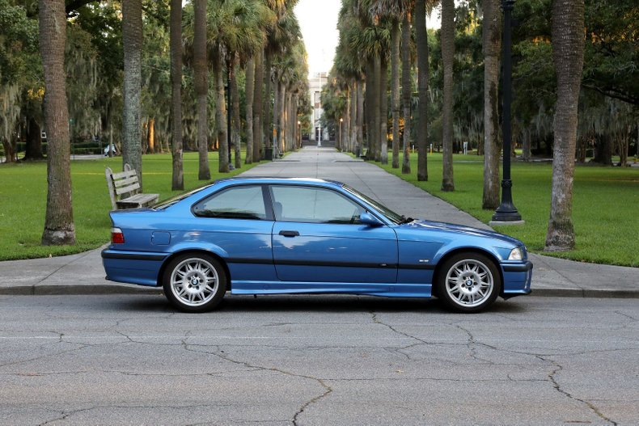

BMW E36
Produkcja
Trwała od 1990 do 2000 roku
Typy nadwozia
Sedan od 1990 do 2000 roku
Coupe od 1992 do 1999 roku
Touring od 1993 do 2000 roku
Compact od 1993 do 2000 roku
Silniki
316i Moc 102 kM Pojemność 1600 cm3
316i Moc 105 kM Pojemność 1600 cm3
318ti Moc 140 kM Pojemność 1800 cm3
320i Moc 150 kM Pojemność 2000 cm3
323ti Moc 170 kM Pojemność 2500 cm3
Kolory Nadwozia
czerwony
niebieski
zielony
żółty
czarny
szary
biały

Wikipedia
| BMW E36 |
| Silniki |
Benzyna |
1.6–3.0 |
| Diesel |
1.7–2.5 |
| Nadwozie |
Sedan, Coupe, Touring |